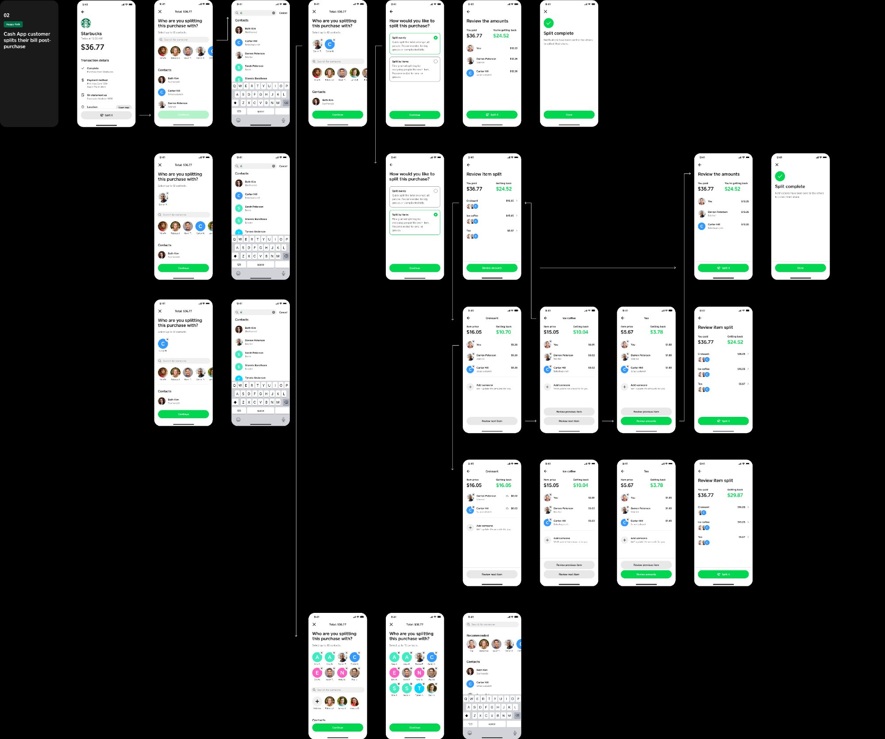

My role
Solo designer
Format
Hack Week · 3 days
Result
Added to product pipeline by Head of Design
The problem with splitting bills
Splitting a bill with friends is one of those everyday frictions that nobody has properly solved. You pay, then you chase. Or everyone installs Splitwise. Or someone just eats the cost. The awkwardness is social as much as it is technical.
Cash App already had the peer-to-peer payment infrastructure. Square already had the merchant POS. The opportunity was obvious: if someone pays with Cash App at a Square terminal, why not let them split that bill with friends right there in the app, without leaving it?
The solution
A native bill-splitting flow integrated directly into the Cash App post-purchase experience. After paying via the Square POS integration, users can select contacts, split by amount or by item, review the split, and send requests — all without leaving Cash App or switching to a third-party app.
The design focused on three things: making the contact selection fast (leveraging existing Cash App contacts), making the split calculation transparent (users see exactly what everyone owes and what they're getting back), and keeping the completion moment satisfying.

How it came together

"Every user who adopts the feature is likely to bring in more users — a network effect that strengthens both Cash App and the Square merchant ecosystem."
Why this matters beyond the feature
The business case was layered. A native bill-splitting feature isn't just a convenience improvement — it's a growth mechanism. Each split request sent to a non-Cash App contact is an organic acquisition prompt. Each Square merchant who enables the POS integration sees more Cash App transactions.
The feature creates a closed loop: Square merchants benefit from higher Cash App adoption among their customers, and Cash App users benefit from more merchants accepting it. Building it into the post-purchase moment — rather than as a standalone tool — is what makes the network effect viable.